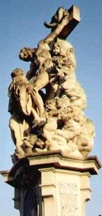

SAINTE LUTGARDE
Il m'a tendu sa plaie, Il m'a montré son sang.
Oh douleur oubliée en moi toujours vivante,
Oh nuit que je ne sais si j'éveille ou j'invente
Abîme enseveli dans ma chair renaissant!
Mais si n'ont suspendu le globe et le croissant
Leur fuite dont le vent est ce temps qui m'enfante,
Comment, honteuse fin et gloire triomphante,
Sous mes doigts placez-vous Son corps incandescent?
Comment a pu le cri atteindre mon oreille
Et l'horreur susciter une angoisse pareille
A celle dont mon Dieu fut le champ haletant
-Brasier qui le bûcher ne consume et pourtant
Enveloppe de feu -, si quelque part ne veille
Son supplice échoué dans une anse du temps?
Michel Galiana (c) 2005
|

|
SAINT LUTHGARD
He has shown me His blood and turned to me His wound!
Forgotten suffering but in me still alive!
Night that I wake, maybe, that, maybe, I devise!
Streams engulfed in abyss that in my flesh abound!
But, if neither the sun has ceased nor the crescent
To flee, raising a wind that's time begetting me,
Why, o shameful ending and triumphant glory,
Dispose within my reach His flesh incandescent?
How could His cry of pain be perceived by my ear?
And how could horror raise in me an anguish near
To the one my God felt whose torture was so sore
-A furnace where no fuel were consumed and still were
An enveloping blaze -, if were not anywhere
In a cove of time His agony run ashore?
Transl. Christian Souchon (c) 2005
|